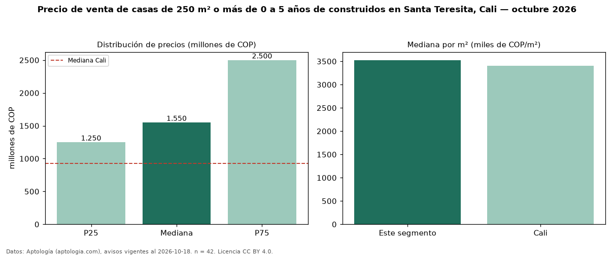

Precio de venta de casas de 250 m² o más de 0 a 5 años de construidos en Santa Teresita, Cali — octubre 2026
COP 1,55 mil millones es el precio mediano de casas de 250 m² o más de 0 a 5 años de construidos en venta en Santa Teresita, Cali (n = 42 avisos). Eso es 3 % menos que la mediana de las casas de 250 m² o más en venta de Santa Teresita (COP 1,60 mil millones, n = 73); este segmento reúne el 58 % de esos avisos. Por metro cuadrado, la mediana es COP 3,53 millones/m² (n = 42), 1 % por debajo de las casas de 250 m² o más en venta de Santa Teresita (COP 3,58 millones/m²). El área mediana anunciada es 478 m². El segmento con más oferta es el de 3 o más habitaciones (42 avisos, mediana COP 1,55 mil millones). La mitad central de los avisos va de COP 1,25 mil millones a COP 2,50 mil millones (razón 2,0), una dispersión alta. El estrato más frecuente es 6 (88 % de los avisos con estrato). La mediana de todas las casas en venta de Cali es COP 930 millones (+67 % de diferencia). Datos: Aptología (aptologia.com), CC BY 4.0 — https://www.aptologia.com/casas-en-venta/cali/santa-teresita. Archivos: PDF, CSV con las cifras y gráfica PNG.

| Avisos únicos | 42 |
|---|---|
| Percentil 25 | COP 1.250.000.000 |
| Mediana | COP 1.550.000.000 |
| Percentil 75 | COP 2.500.000.000 |
| Mediana por m² | COP 3.526.343 |
Fuente: avisos vigentes de portales inmobiliarios recopilados por Aptología, deduplicados (mínimo 30 avisos únicos por celda). Precios pedidos, no cerrados. Fecha: 2026-10-18.